ユーザー設定#
ユーザー設定ページでは、Backend.AI WebUIの環境をカスタマイズできます。 右上の人アイコンをクリックし、環境設定メニューを選択してアクセスできます。 ここでは、テーマモード、言語、デスクトップ通知、SSHキーペア管理、シェル スクリプト、実験的機能などの設定を行うことができます。また、クライアント側の ログや、現在アカウントにログインしているログインセッション、ログイン履歴を 確認することもできます。
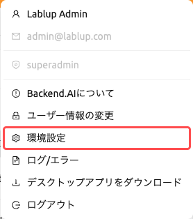
このページは、一般、ログ、ログインセッション、ログイン履歴の 4つのタブで構成されています。
一般タブ#
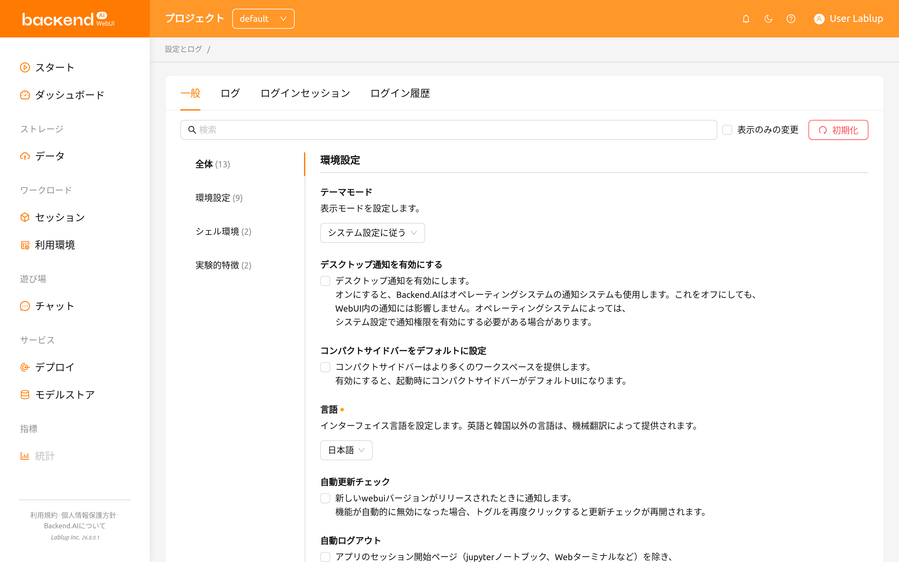
一般タブには、環境設定、シェル環境、実験的特徴のグループに整理された すべての設定項目が含まれています。左側のリストから特定のグループに移動でき、 全体を選択するとすべての設定項目を一度に表示できます。
設定の検索とフィルタリング#
設定エリアの上部にある検索バーを使用して、設定名ですばやく検索できます。 キーワードを入力すると、一致する設定のみが表示されます。
表示のみの変更チェックボックスをオンにすると、デフォルト値から変更された 設定のみをフィルタリングして表示できます。これにより、カスタマイズした すべての項目を一目で確認できます。
設定のリセット#
すべての設定をデフォルト値に戻すには、設定エリアの上部にある初期化 ボタンをクリックします。リセットが適用される前に、この操作は元に戻せないという 警告とともに確認ダイアログが表示されます。
各設定にも個別のリセットボタンがあり（値がデフォルトと異なる場合に表示）、 他の設定に影響を与えずに個別の設定をリセットできます。
テーマモード#
WebUIの表示モードを設定します。以下から選択できます:
- システム設定に従う: オペレーティングシステムのライト/ダークモード設定に 自動的に従います。
- ライトモード: 常にライトテーマを使用します。
- ダークモード: 常にダークテーマを使用します。
テーマ#
テーマは、ライトモードとダークモードの両方でWebUI全体に適用される配色です。 テーマの選択が利用できる場合、テーマ設定から製品に組み込まれている次の テーマのいずれかを選択できます:
- Default: この環境用に設定された色で構成された標準の外観です。
- Stained
- Glass
- Reverie
- Bliss
選択したテーマはすぐに適用され、選択内容はアカウントに保存されます。設定の リセットボタンをクリックすると、Defaultテーマに戻ります。
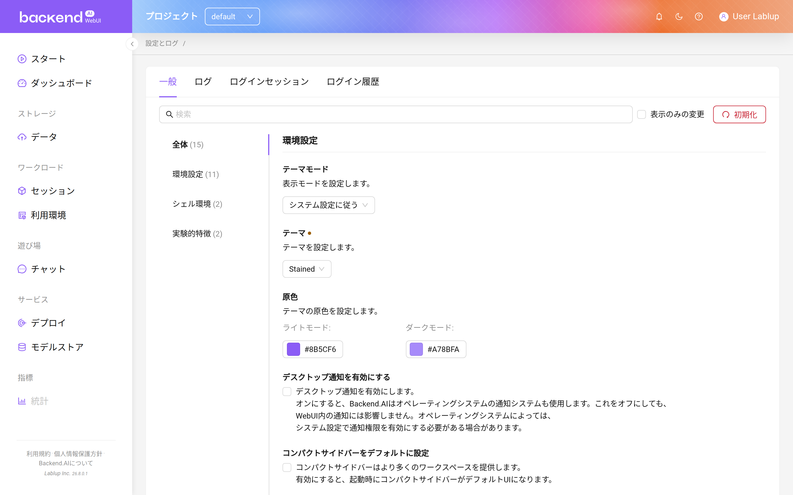
テーマ設定は、管理者がテーマのカスタマイズを有効にし、かつ環境に複数の テーマが用意されている場合にのみ表示されます。そのため、提供されるテーマの 一覧は上記と異なる場合があります。
原色#
原色は、選択したテーマのアクセントカラーを上書きします。ライトモード用と ダークモード用に1つずつ、合計2つのカラーピッカーが用意されているため、表示 モードごとに異なるアクセントカラーを使用できます。
- 変更したいモードのカラースウォッチをクリックします
- カラーピッカーで色を選ぶか、16進数の値を入力します
- 新しいアクセントカラーがWebUIにすぐに適用されます
カラーピッカーをクリアすると、そのモードでは選択中のテーマが提供する色が使用 されます。設定のリセットボタンをクリックすると、両方のモードの設定がクリア され、テーマ本来の色に戻ります。
テーマ設定と同様に、原色も管理者がテーマのカスタマイズを有効にしている 場合にのみ表示されます。
デスクトップ通知を有効にする#
デスクトップ通知機能を有効または無効にします。有効にすると、Backend.AIは アプリ内通知に加えてオペレーティングシステムの通知システムも使用します。 この機能を無効にしても、WebUI内の通知には影響しません。オペレーティングシステム によっては、システム設定で通知の許可を有効にする必要がある場合があります。
コンパクトサイドバーをデフォルトに設定#
このオプションがオンの場合、左のサイドバーはコンパクトな形式（幅が狭く）で 表示されます。オプションの変更は、ブラウザを更新すると適用されます。ページを 更新せずにサイドバーのタイプを直ちに変更したい場合は、ヘッダー上部の最も左の アイコンをクリックしてください。
言語#
UIに表示される言語を設定します。言語セレクタは検索可能なドロップダウンで、 English、한국어、brasileiro、简体中文、繁體中文、Français、Suomalainen、Deutsch、 Ελληνική、Bahasa Indonesia、Italiano、日本語、Монгол、Polski、Português、 русский、Español、ภาษาไทย、Türkçe、Tiếng Việtの20言語がリストされています。 ドロップダウンに入力して、言語をすばやくフィルタリングして見つけることが できます。
ブラウザのデフォルト言語と一致する項目には、名前の横に「(Default)」ラベルが 表示されます。英語と韓国語以外の言語は機械翻訳で提供されます。ページを更新する まで言語が更新されないUIアイテムがある場合があります。
一部の翻訳項目は__NOT_TRANSLATED__と表示される場合があります。これは、
その言語への翻訳がまだ完了していないことを示しています。Backend.AI WebUIは
オープンソースですので、翻訳の改善に貢献したい方はどなたでも参加できます:
https://github.com/lablup/backend.ai-webui.
ログアウト中はログインセッション情報を保持する#
この設定はElectron（デスクトップ）アプリでのみ利用可能です。
有効にすると、WebUIアプリは次回のアプリ起動時まで現在のログインセッション情報を 保持します。オプションがオフの場合、ログイン情報はログアウトごとにクリア されます。
自動更新チェック#
新しいWebUIバージョンが検出されると、通知ウィンドウがポップアップします。 これは、インターネット接続が利用可能な環境でのみ動作します。機能が自動的に 無効化された場合、トグルを再度クリックすると更新チェックが再開されます。
自動ログアウト#
セッション内でアプリを実行するために作成されたページ（例：Jupyterノートブック、 ウェブターミナルなど）を除き、すべてのBackend.AI WebUIページが閉じられると、 自動的にログアウトされます。
私のキーペア情報#
すべてのユーザーは少なくとも1つ以上のキーペアを持っています。「コンフィグ」ボタンを クリックすると、アクセスキーとシークレットキーを確認できます。メインの アクセスキーペアは1つだけです。
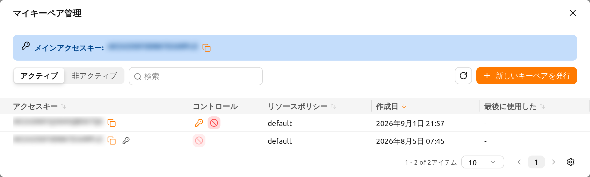
ダイアログ上部の メインアクセスキー バナーには、現在のメインアクセスキーが 表示されます。横のコピーアイコンをクリックすると、キーをクリップボードにコピー できます。
キーペアの閲覧#
ダイアログにはキーペアがテーブル形式で一覧表示されます。テーブル上部の コントロールを使用して、表示する項目を絞り込むことができます:
- アクティブ / 非アクティブ トグル: アクティブなキーペアの表示と無効化 されたキーペアの表示を切り替えます。
- フィルター: アクセスキー または リソースポリシー で一覧を フィルタリングします。
- 列の並べ替え: 列ヘッダーをクリックして、アクセスキー、リソース ポリシー、作成日、または 最後に使用した でテーブルを並べ替えます。
- ページネーション: 1ページに収まらないほどキーペアが多い場合に、ページ間を 移動します。
テーブルには次の列が含まれます:
- アクセスキー: キーペアのアクセスキーです。メインアクセスキーにはキー アイコンが付きます。コピーアイコンをクリックすると、アクセスキーをコピー できます。
- コントロール: 各キーペアで使用できる操作です（以下を参照）。
- リソースポリシー: キーペアに適用されているリソースポリシーです。
- 作成日: キーペアが作成された日時です。
- 最後に使用した: キーペアが最後に使用された日時です。
- 変更日時: キーペアが最後に変更された日時です。この列はデフォルトで 非表示になっており、テーブルの列設定から表示できます。
新しいキーペアの発行#
新しいキーペアを発行 ボタンをクリックすると、新しいキーペアを作成できます。 キーペアが発行されると、キーペア資格情報 ダイアログが表示され、新しい資格 情報が一度だけ表示されます。
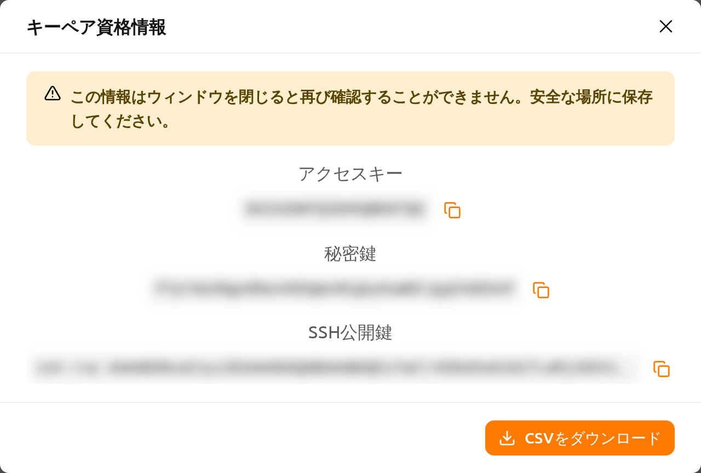
ダイアログには次の値が、それぞれコピーボタンとともに表示されます:
- アクセスキー
- 秘密鍵
- SSH公開鍵
CSVをダウンロード をクリックすると、資格情報をファイルに保存できます。
「この情報はウィンドウを閉じると再び確認することができません。安全な場所に 保存してください。」 秘密鍵は一度だけ表示されます。ダイアログを閉じる前に コピーするか、CSVをダウンロードしてください。閉じた後は秘密鍵を再取得する方法は ありません。
アクティブなキーペアの管理#
各アクティブなキーペアの コントロール 列では、次の操作を使用できます:
メインに設定: このキーペアをメインアクセスキーに指定します。変更が反映 される前に確認プロンプトが表示されます。現在使用中のメインアクセスキーには この操作は表示されません。
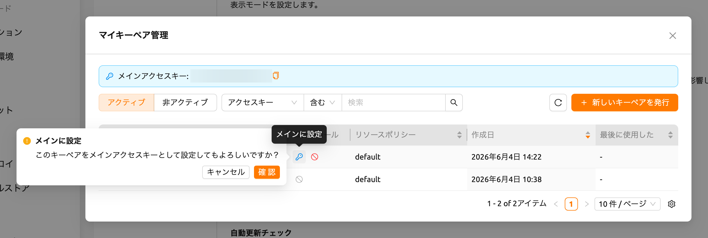
図 19.6 非アクティブ化: キーペアを無効化して使用できないようにします。キーペアが 無効化される前に確認プロンプトが表示されます。メインアクセスキーは無効化 できないため、先に別のキーに切り替えてください（「メインアクセスキーは 非アクティブ化できません。別のキーに切り替えてから行ってください。」）。
メインアクセスキーが変更されると（たとえば、新しいキーペアを発行してそれを メインに設定した場合など）、WebUIに 再ログインが必要です という通知と共に 「メインアクセスキーが変更されました。変更を反映するには、再度ログインして ください。」 というメッセージが表示されます。変更されたメインアクセスキーを セッションに反映するには、ログアウトして再度ログインしてください。
非アクティブなキーペアの管理#
非アクティブ 表示に切り替えると、無効化されたキーペアを管理できます。各 非アクティブなキーペアでは、次の操作を使用できます:
- 復元する: キーペアを再びアクティブ化して使用できるようにします。キーペアが 復元される前に確認プロンプトが表示されます。
- キーペアの削除: キーペアを完全に削除します。
キーペアの削除は 元に戻せません。一度削除したキーペアは復元できません。 誤った削除を防ぐため、削除が許可される前に確認フィールドに 完全に削除 と 入力する必要があります。
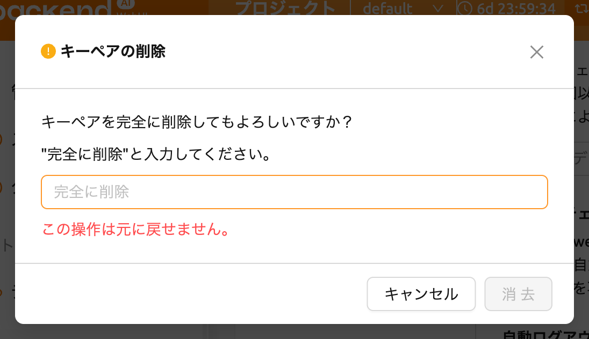
SSHキーペア管理#
WebUIアプリを使用する際、コンピュートセッションに直接SSH/SFTP接続を作成でき
ます。Backend.AIにサインアップすると、公開キーペアが提供されます。SSHキーペア
管理セクションの右側にあるボタンをクリックすると、次のダイアログが表示されます。
右側のコピーボタンをクリックして、既存のSSH公開鍵をコピーできます。ダイアログ
の下部にある生むボタンをクリックすると、SSHキーペアを更新できます。SSH
公開/秘密鍵はランダムに生成され、ユーザー情報として保存されます。秘密鍵は作成
後すぐに手動で保存しない限り、再確認できないことに注意してください。
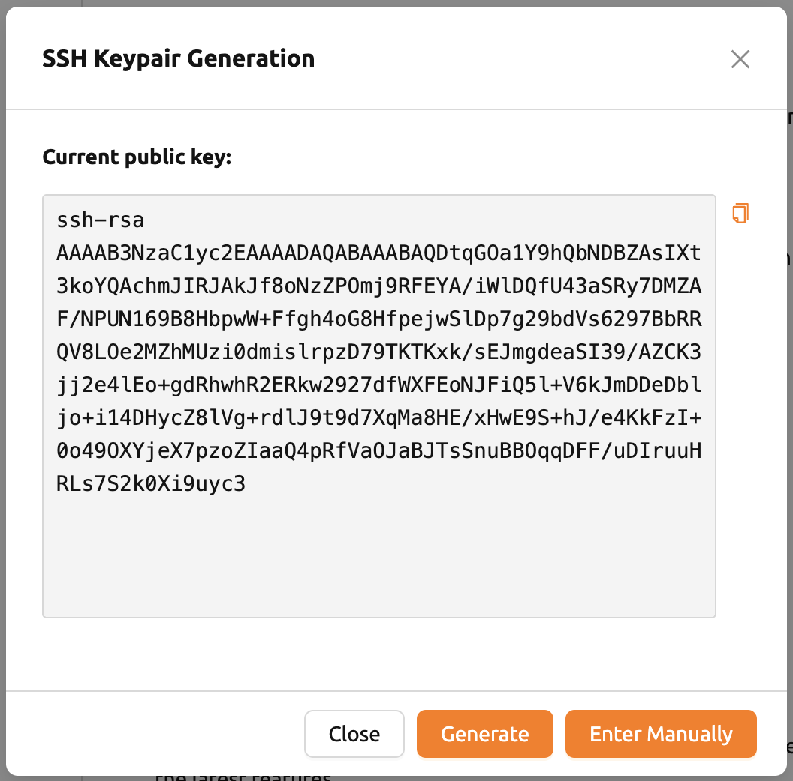
Backend.AIはOpenSSHに基づいたSSHキーペアを使用します。Windowsでは、これを PPKキーに変換する必要がある場合があります。
Backend.AI WebUIは、プライベートリポジトリへのアクセスなどの柔軟性を提供するために、
独自のSSHキーペアの追加をサポートしています。独自のSSHキーペアを追加するには、
直接入力するボタンをクリックしてください。
公開鍵と秘密鍵の2つのテキストエリアが表示されます。

キーを入力して保存ボタンをクリックしてください。これで、独自のキーを使用して
Backend.AIセッションにアクセスできます。
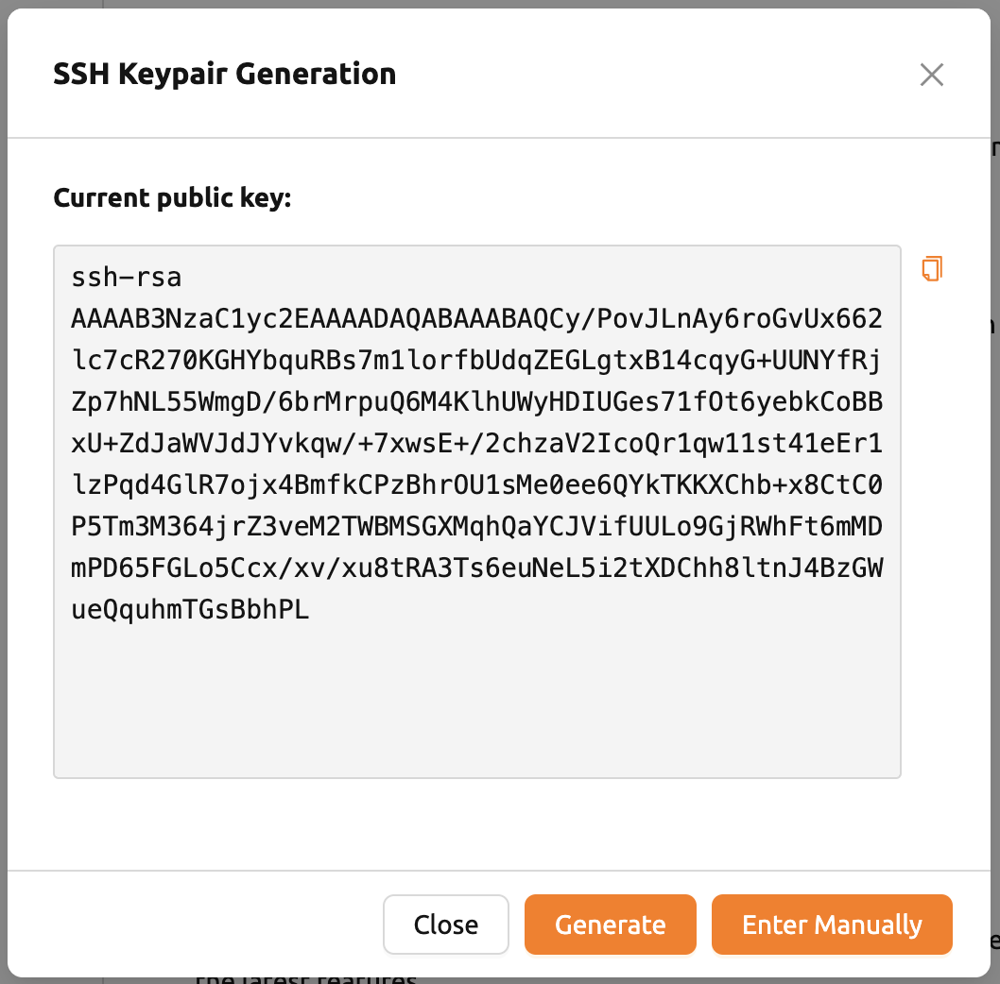
最大同時ファイルアップロード制限#
ファイルエクスプローラーを通じて同時にアップロードできるファイルの数を制限 します。2から5の値を選択できます。デフォルト値は2です。
ブートストラップスクリプトの編集#
コンピュートセッションが開始された直後に一度だけスクリプトを実行したい場合は、 ここに内容を記述してください。
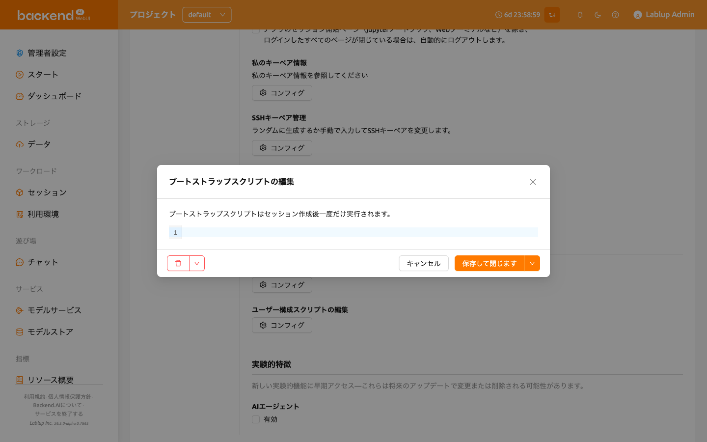
ブートストラップスクリプトの実行が完了するまで、コンピュートセッションは
PREPARINGステータスのままです。セッションがRUNNINGになるまで使用できない
ため、スクリプトに時間のかかるタスクが含まれている場合は、ブートストラップ
スクリプトから削除してターミナルアプリで実行することをお勧めします。
ユーザー構成スクリプトの編集#
コンピュートセッションのデフォルトの設定スクリプトを置き換える設定スクリプトを
記述できます。.bashrc、.tmux.conf.local、.vimrcなどのファイルを
カスタマイズできます。スクリプトはユーザーごとに保存され、特定の自動化タスクが
必要な場合に使用できます。たとえば、.bashrcスクリプトを変更して、コマンド
エイリアスを登録したり、特定のファイルが常に特定の場所にダウンロードされるように
指定したりできます。
上部のドロップダウンメニューを使用して作成したいスクリプトのタイプ（.bashrc、
.zshrc、.tmux.conf.local、.vimrc、.Renviron）を選択し、内容を記述します。
保存して閉じますボタンをクリックするとスクリプトを保存してダイアログを閉じ、
隣の矢印から閉じずに保存を選択すると、ダイアログを開いたまま保存できます。
ダイアログ左側のボタンでは、スクリプトの削除や未保存の変更のリセットができます。
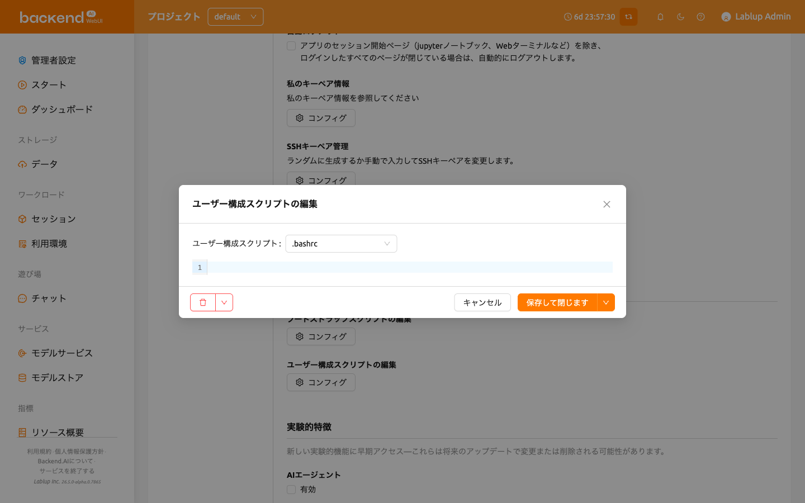
実験的特徴#
新しい実験的機能に早期アクセスできます。これらは将来のアップデートで変更または 削除される可能性があります。各機能は有効チェックボックスでオンにします。
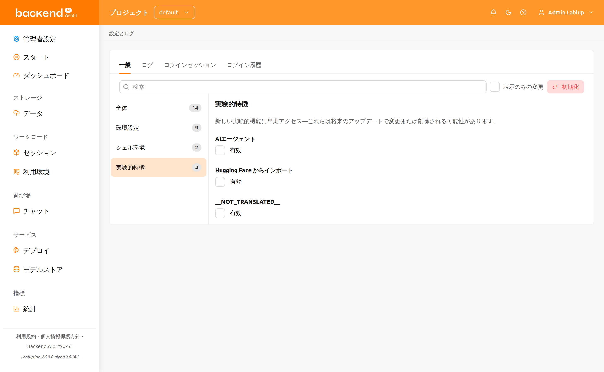
- AIエージェント: AIエージェント機能を有効にします。この機能はWebUI内で エージェントベースのAI機能を提供します。有効にすると、セッションでAI エージェント機能を利用できるようになります。
- カスタムダッシュボードパネル: ダッシュボードページに自分だけのカスタム パネルを追加できるようになります。各パネルは、選択したデータソースを指定した 条件で絞り込んで表示します。この機能が有効な間のみパネルが 表示され、後で無効にすると、削除されずに非表示になり、再度有効にすると 元の状態に復元されます。追加・管理方法については カスタムパネルセクションを参照してください。
- Hugging Face からインポート: スタートページのURLから開始ダイアログに Hugging Face モデルをインポートタブを追加し、Hugging Faceのモデルを モデルフォルダへ直接インポートできるようにします。このタブは、環境でモデル デプロイ機能も利用できる場合にのみ表示されます。
- セッションリソースグリッドビュー（日本語UIでは未翻訳のため
__NOT_TRANSLATED__と表示されます）: セッションページとAdmin Sessionページ のセッションリストの上に、表示モード（View mode）の切り替え （Table / Grid）を追加します。Grid を選択すると、テーブルの 代わりにセッションごとにセルが1つずつ表示され、セルの色はそのセッションの リアルタイムのリソース使用率を表します。この切り替えは、本機能を有効に している間のみ表示されます。グリッド自体の操作については セッションリストの表示を参照してください。
ログタブ#
クライアント側で記録されたさまざまなログの詳細情報を表示します。このページを 訪れることで、発生したエラーについて詳しく知ることができます。エラーログの 検索、フィルタリング、ログの更新、右上のログをクリアするボタンをクリックして のログクリアが可能です。
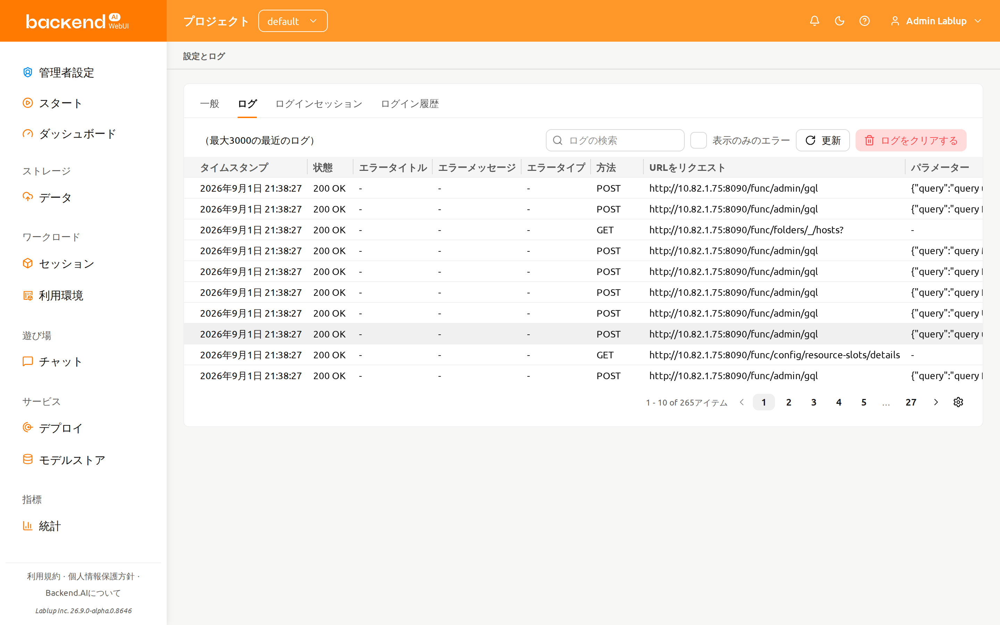
1つのページにしかログインしていない場合、更新ボタンをクリックしても正しく 機能していないように見えるかもしれません。ログページはサーバーへのリクエストと サーバーからのレスポンスの集まりです。現在のページがログページである場合、 ページを明示的にリフレッシュする以外にサーバーへのリクエストは送信されません。 ログが正しく積み重ねられているか確認するには、別のページを開いて更新ボタンを クリックしてください。
特定の列を非表示にしたり表示したりしたい場合は、テーブルの右下にある歯車 アイコンをクリックしてください。表示したい列を選択するダイアログが表示 されます。
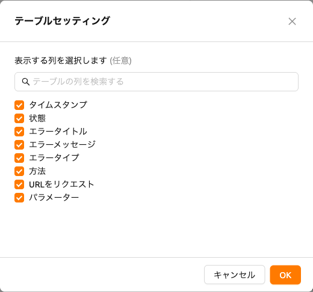
ログインセッションタブ#
ログインセッションタブには、現在アカウントに関連付けられているログイン セッションが一覧表示されます。Backend.AIにサインインしている場所ごとに1件の 項目が表示されるため、アカウントがどこで使用されているかを確認したり、不要に なったセッションをサインアウトさせたりできます。
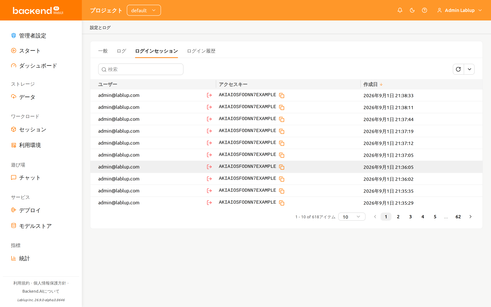
テーブルには次の列が含まれます:
- ユーザー: そのログインセッションを所有するアカウントのメールアドレスです。
- アクセスキー: ログインセッションが認証に使用するアクセスキーです。コピー アイコンをクリックするとコピーできます。
- 作成日: ログインセッションが作成された日時です。列ヘッダーをクリックすると この列で並べ替えできます。
ログインセッションのフィルタリング#
テーブル上部のフィルターを使用して、一覧を絞り込むことができます:
- アクセスキー: 入力した文字列をアクセスキーに含むログインセッションのみを 表示します。
- 作成日: 選択した日時より後（または前）に作成されたログインセッションのみを 表示します。
テーブル下部のページネーションコントロールを使用して、ページ間を移動したり、 1ページに表示する行数を変更したりできます。
ログインセッションの無効化#
各行には、ユーザー列のメールアドレスの横にセッションを無効化の操作が 用意されています。
- 終了したい行のセッションを無効化をクリックします
- そのログインセッションのアクセスキーが表示された確認プロンプトを確認します
- 無効化をクリックします
一覧が再読み込みされ、*「ログインセッションを無効化しました。」というメッセージが 表示されます。ログインセッションを無効化できない場合は、「ログインセッションの 無効化に失敗しました。」*と表示されます。
ログインセッションを無効化すると、そのセッションはただちにサインアウトされます。 現在使用しているログインセッションを無効化した場合は、再度ログインする必要が あります。
ログイン履歴タブ#
ログイン履歴タブには、アカウントについて記録されたログイン試行が表示されます。 サインインの成功や失敗に加えて、ログアウトや期限切れなどのログインセッションに 関するイベントも表示されます。このタブは閲覧専用で、行に対する操作はありません。
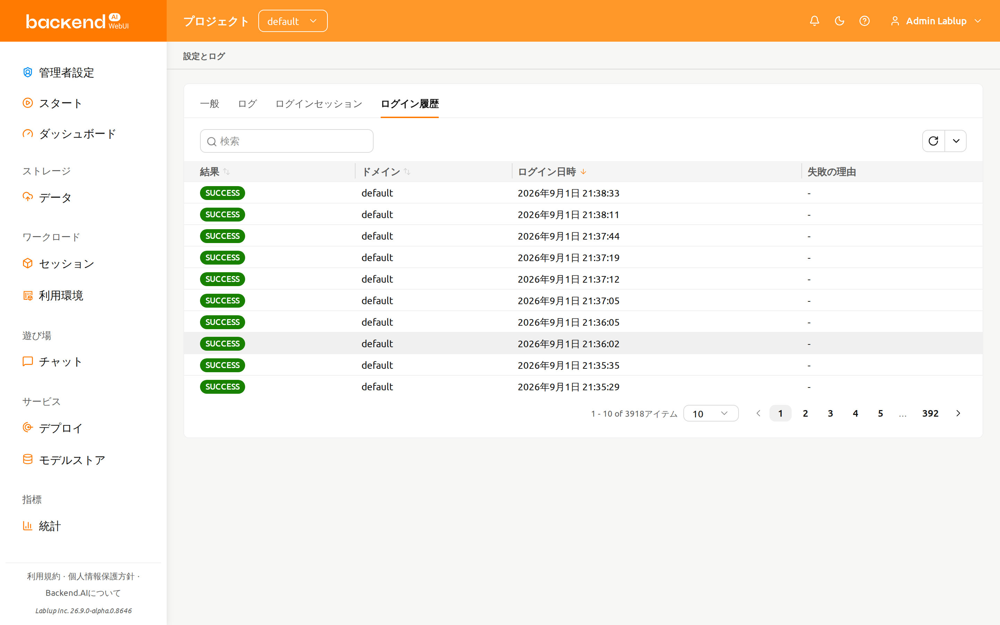
テーブルには次の列が含まれます:
- 結果: ログイン試行の結果で、色分けされたタグとして表示されます。この列で 並べ替えできます。
- ドメイン: ログインを試みたドメインです。この列で並べ替えできます。
- ログイン日時: ログイン試行が記録された日時です。この列で並べ替えできます。
- 失敗の理由: 失敗した試行について追加で報告された詳細です。該当する内容が
ない場合は
-と表示されます。
結果の値はサーバーが報告したまま（例: SUCCESS、
FAILED_INVALID_CREDENTIALS）表示され、翻訳されません。
結果の値#
| 結果 | 色 | 意味 |
|---|---|---|
| SUCCESS | 緑 | サインインに成功しました |
| FAILED_INVALID_CREDENTIALS | 赤 | メールアドレスまたはパスワードが誤っています |
| FAILED_USER_INACTIVE | 赤 | アカウントが有効ではありません |
| FAILED_BLOCKED | 赤 | サインインがブロックされました |
| FAILED_PASSWORD_EXPIRED | 赤 | アカウントのパスワードが期限切れです |
| FAILED_REJECTED_BY_HOOK | 赤 | サーバー側のフックによってサインインが拒否されました |
| FAILED_SESSION_ALREADY_EXISTS | 赤 | そのアカウントのログインセッションがすでに存在します |
| LOGOUT | グレー | サインアウトによりログインセッションが終了しました |
| REVOKED_BY_ADMIN | 黄 | 管理者がログインセッションを無効化しました |
| REVOKED_BY_USER | グレー | ユーザー自身がログインセッションを無効化しました |
| EVICTED | 黄 | サーバーがログインセッションを解除しました |
| EXPIRED | グレー | ログインセッションが期限切れになりました |
ログイン履歴のフィルタリング#
テーブル上部のフィルターを使用して、一覧を絞り込むことができます:
- 結果: 上記の結果の値から選択した結果の項目のみを表示します。
- ドメイン: 入力した文字列をドメインに含む項目のみを表示します。
- ログイン日時: 選択した日時より後（または前）に記録された項目のみを 表示します。
テーブル下部のページネーションコントロールを使用して、ページ間を移動したり、 1ページに表示する行数を変更したりできます。